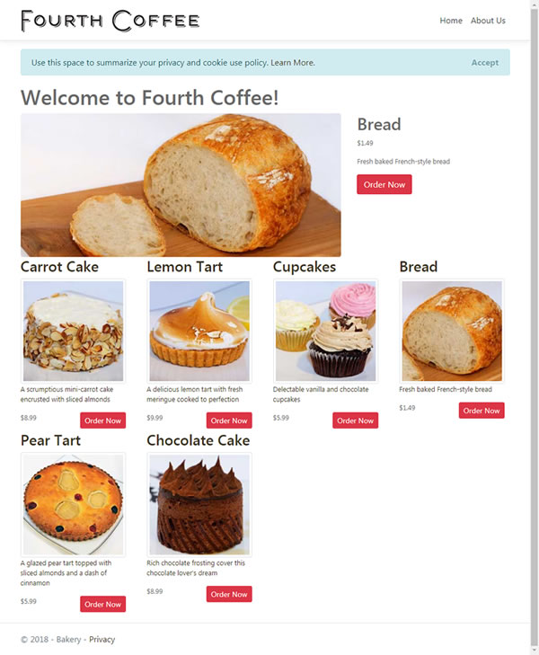
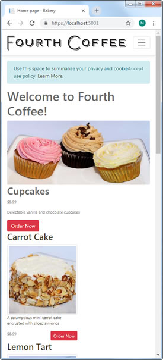
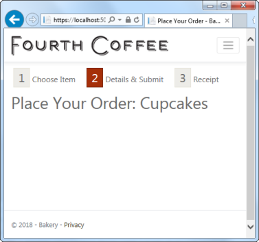

在第一次使用数据时，您将重点关注使用 BakeryContext 检索要显示在主页和订购页面上的数据，这些数据尚未添加到应用程序中。
提醒一下，该主页应类似于此处的 ASP.NET Web Pages 版本：

显示所有产品及其说明，图像和价格，并随机选择其中一种产品作为特色产品出现在页面顶部。
需要少量准备工作才能管理数据的显示。 因此，首先，将以下代码添加到位于 wwwroot/css 中的现有 site.css 文件中：
body{
color: #696969;
}
a:link {
color: #3b3420;
text-decoration: none;
}
a:visited {
color: #3b3420;
text-decoration: none;
}
a:hover {
color: #a52f09;
text-decoration: none;
}
a:active {
color: #a52f09;
}
a.order-button, a.order-button:hover{
color: #fdfcf7;
}
.productInfo, .action{
max-width: 200px;
}
p{
font-size: 0.8rem;
}
#orderProcess {
list-style: none;
padding: 0;
clear: both;
}
#orderProcess li {
color: #696969;
display: inline;
font-size: 1.2em;
margin-right: 15px;
padding: 3px 0px 0px 5px;
}
.step-number {
background-color: #edece8;
border: 1px solid #e6e4d9;
font-size: 1.5em;
margin-right: 5px;
padding: 3px 10px;
}
.current .step-number {
background-color: #a52f09;
border-color: #712107;
color: #fefefe;
}
.orderPageList{
padding-inline-start: 20px;
}
.actions .order-button{
margin-left:20px;
}
PageModel
现在，打开 Pages/Index.cshtml.cs 文件，并将内容替换为以下内容：
using System;
using System.Collections.Generic;
using System.Linq;
using System.Threading.Tasks;
using Bakery.Data;
using Bakery.Models;
using Microsoft.AspNetCore.Mvc;
using Microsoft.AspNetCore.Mvc.RazorPages;
using Microsoft.EntityFrameworkCore;
namespace Bakery.Pages
{
public class IndexModel : PageModel
{
private readonly BakeryContext db;
public IndexModel(BakeryContext db) => this.db = db;
public List<Product> Products { get; set; } = new List<Product>();
public Product FeaturedProduct { get; set; }
public async Task OnGetAsync()
{
Products = await db.Products.ToListAsync();
FeaturedProduct = Products.ElementAt(new Random().Next(Products.Count));
}
}
}
这是 PageModel 文件。 PageModel 充当页面控制器和视图模型的组合。 作为控制器，其作用是处理来自请求的信息，然后为视图准备模型（viewmodel）。 PageModels 和内容页面（视图）之间存在一对一的映射，因此 PageModel 本身就是 viewmodel。
来自请求的信息在 handler 方法中处理。
此 PageModel 具有一个 handler 方法 - OnGetAsync ，该约定是作为约定使用由 GET 动词发出的 HTTP 请求而执行的。
PageModel 有一个名为 db 的私有字段，它是 BakeryContext 类型。
它还具有一个构造函数方法，该方法将 BakeryContext 对象作为参数。
参数的值由依赖项注入系统提供。这种模式称为构造注入。
将参数分配给构造函数中的私有字段（使用表达式主体）。
PageModel 类具有两个公共属性 - 产品列表和一个产品，代表出现在页面顶部的特色产品。
该列表由 OnGetAsync 方法中的以下代码填充：
Products = await db.Products.ToListAsync();
OnGetAsync 方法中的下一行代码将其中一个产品随机分配给 FeaturedProduct 属性：
FeaturedProduct = Products.ElementAt(new Random().Next(Products.Count));内容页面
现在该制作产品界面了。 用以下内容替换 Index 页面（Pages/Index.cshtml）中的代码：
@page
@model IndexModel
@{
ViewData["Title"] = "Home page";
}
<h1>Welcome to Fourth Coffee!</h1>
<div id="featuredProduct" class="row">
<div class="col-sm-8">
<img alt="Featured Product" src="~/Images/Products/@Model.FeaturedProduct.ImageName" class="img-fluid rounded"/>
</div>
<div id="featuredProductInfo" class="col-sm-4">
<div id="productInfo">
<h2>@Model.FeaturedProduct.Name</h2>
<p class="price">$@string.Format("{0:f}", Model.FeaturedProduct.Price)</p>
<p class="description">@Model.FeaturedProduct.Description</p>
</div>
<div id="callToAction">
<a class="btn btn-danger order-button" asp-page="/order" asp-route-id="@Model.FeaturedProduct.Id" title="Order @Model.FeaturedProduct.Name">Order Now</a>
</div>
</div>
</div>
<div id="productsWrapper" class="row">
@foreach (var product in Model.Products)
{
<div class="col-sm-3">
<a asp-page="/order" asp-route-id="@product.Id" title="Order @product.Name">
<div class="productInfo">
<h3>@product.Name</h3>
<img class="product-image img-fluid img-thumbnail" src="~/Images/Products/Thumbnails/@product.ImageName" alt="Image of @product.Name" />
<p class="description">@product.Description</p>
</div>
</a>
<div class="action">
<p class="price float-left">$@string.Format("{0:f}", product.Price)</p>
<a class="btn btn-sm btn-danger order-button float-right" asp-page="/order" asp-route-id="@product.Id" title="Order @product.Name">Order Now</a>
</div>
</div>
}
</div>
页面顶部的 @model 指令指定页面模型的类型（IndexModel）。 您可以通过内容页面的 Model 属性使用 PageModel 。
HTML 的顶部显示了特色产品。
底部循环浏览所有产品并显示其缩略图。
每个产品都包含一个超链接，其样式类似于按钮（使用 Bootstrap 样式）。
尽管还没有到位，但超链接是由定位标签助手生成的，它包括一个 asp-route 属性。
此属性用于将数据作为路由值传递到目标页面。
当您添加“订购”页面时，您将看到下一步的工作方式。
同时，通过在终端上运行 dotnet run 来测试应用程序，然后浏览至 https://localhost:5001 。 主页应如下所示：

移动端用户浏览
原始的网页烘焙模板使用设备检测或浏览器嗅探来满足移动用户的需求。
如果检测到用户正在使用移动设备（主要是根据在user-agent标头中找到的值推断），则站点将切换为使用其他布局文件（sitelayout.mobile.cshtml）。
这种方法有两个问题：首先，您需要使设备检测库保持最新状态，否则它最终会失败而不是成功。
其次，您需要为网站维护多个版本的布局文件和样式表。
如今，解决不同设备分辨率问题的解决方案是使用响应设计， 该技术可检测可用的屏幕尺寸，并相应地对内容进行重排。 此功能内置在 Bootstrap 中，您可以通过调整当前打开的浏览器的大小来查看其功能。 一旦浏览器窗口的宽度降到576px以下，显示就会发生巨大变化：

特色产品图片已按比例缩小，其他产品面板已垂直堆叠。 此外，菜单现在处于隐藏状态，当用户使用3个水平条点击/单击按钮时将调用该菜单。
576px的断点是通过在 div 中使用 col-sm-* 类确定的，其中 sm 是CSS类名称的相关部分。
如果我们使用过 如果使用 col-md-3 ，则当浏览器宽度低于768px时，内容就会堆积起来。
您可以在此处了解有关 Bootstrap Grid 系统的更多信息。
当然，由于自适应设计技术与设备无关，因此您无需依赖仿真器来测试它们。
添加订单页面
通过在命令行中执行以下命令来添加新页面：
dotnet new page --name Order --namespace Bakery.Pages --output Pages打开新创建的 Order.cshtml.cs 文件，并将内容替换为以下内容：
using System;
using System.Threading.Tasks;
using Bakery.Data;
using Bakery.Models;
using Microsoft.AspNetCore.Mvc;
using Microsoft.AspNetCore.Mvc.RazorPages;
namespace Bakery.Pages
{
public class OrderModel : PageModel
{
private BakeryContext db;
public OrderModel(BakeryContext db) => this.db = db;
[BindProperty(SupportsGet =true)]
public int Id { get; set; }
public Product Product { get; set;}
public async Task OnGetAsync() => Product = await db.Products.FindAsync(Id);
}
}
同样，将 BakeryContext 注入到 PageModel 构造函数中。 一个公共属性 Product 在 OnGetAsync 方法中实例化。
FindAsync 方法采用一个值，该值表示要返回的实体的主键。 在这种情况下，传递给 FindAsync 方法的参数是另一个公共属性 - Id。
但是它从哪里获得值呢？
Id 属性用 BindProperty 属性装饰。
此属性确保该属性包含在模型绑定过程中，这导致将作为 HTTP 请求的一部分传递的值映射到 PageModel 属性和 handler 方法参数。
默认情况下，模型绑定仅适用于 POST 请求中传递的值。
单击主页上的链接可进入“订购”页面，这将导致 GET 请求。
您必须添加 SupportsGet = true 才能选择加入 GET 请求的模型绑定。
如果您还记得的话，链接到“订单”页面的主页上的定位标记帮助器包括一个 asp-route-id 属性，代表名为id的路由值。
路由值作为URL的一部分传递。
如果接收页面定义了匹配的路由参数，则该值将作为 URL 的一部分传递，例如 order/3。
否则，它将作为查询字符串值传递：order?id=3。
无论哪种方式，输入值都将绑定到 Id 属性。
接下来，修改 Order.cshtml 的内容，如下所示：
@page "{id:int}"
@model Bakery.Pages.OrderModel
@{
ViewData["Title"] = "Place Your Order";
}
<ol id="orderProcess">
<li><span class="step-number">1</span>Choose Item</li>
<li class="current"><span class="step-number">2</span>Details & Submit</li>
<li><span class="step-number">3</span>Receipt</li>
</ol>
<h1>Place Your Order: @Model.Product.Name</h1>
代码的第一行包含 @page 指令，这就是使其成为 Razor Page 的原因，并且还包括以下内容：“”。
这是一个路由模板。 在此处定义页面的路由参数。
该模板定义了一个名为 id 的参数（这将导致主页上的定位标记帮助程序生成以 id 值作为分段的 URL）。
您还 添加了约束。 在这种情况下，您已指定 id 的值必须为整数(:int)。
基本上，这意味着除非提供 id 路由值的整数值，否则无法访问订单页面。
现在，如果您运行该应用程序并单击主页上的按钮之一，则会显示订单页面，其中包含所选产品的名称：

小结
您已成功使用 BakeryContext 连接到数据库并检索已分配给 PageModel 属性的数据。
它们通过内容页面中的 Model 属性公开，您可以在其中循环浏览产品集合以显示它们。
您还将在本节中看到如何在URL中传递数据并利用 BindProperty 属性将路由值映射到 PageModel 中的公共属性。
最后，您已经了解了如何使用该值查询特定项目，以便可以显示其详细信息。
在下一部分中，您将使用户能够通过表单提供其订单的联系方式和运输详细信息。
下一步: 使用表单（forms）
上一步: 创建迁移